MuCoinDesign case study · 11 min read
Setting up a budget should give something back along the way.
MuCoin is a personal-finance app concept, and this is its setup: five steps that take a person from their income to a first budget they have checked themselves.
- Role
- Flow, screen design, prototype and written rationale
- Team
- Solo
- Timeline
- 2021–22
- For
- A design assignment set by a company
- Platform
- Setup flow for a personal-finance app, as a clickable Figma prototype
- Methods
- Double Diamond process, three usability rules (Hick, Miller, Jakob), a plan of 18 measures
- Status
- Concept. Not built or tested. Every number on this page is a target, not a result
In short
- The problem: a budgeting app has to ask what you earn and spend before it can help. Those numbers are private and hard to remember, and a long form gives nothing back until the end.
- What I did: I designed a five-step setup (income, fixed expenses, variable expenses, saving goals, review), made it a clickable prototype and wrote down the reason for every screen.
- The key idea: ask for a little, then show what it adds up to. Each expense step ends with a chart and a total, and the last step lets the person fix anything.
- Where it stands: a concept. It has not been built or tested. I set targets for 18 measures, and none of them has been measured.
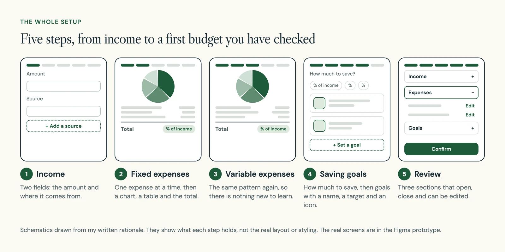
01 The problem
A budgeting app asks its hardest questions first
A budgeting app can only help once it knows what you earn and what you spend. So the first thing it does is ask. Income is a private number. Expenses are hard to remember, and there are many of them.
If setup is one long form, the person does all of that work before they see anything useful. I wanted the setup itself to give something back along the way.
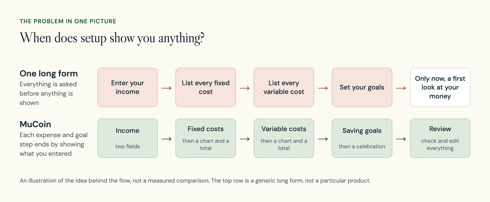
02 My approach
I wrote down a reason for every screen
This was a solo project. I followed the Double Diamond, a design process with four stages: discover, define, develop and deliver. Here is what I have to show for each stage, including what has not happened yet.
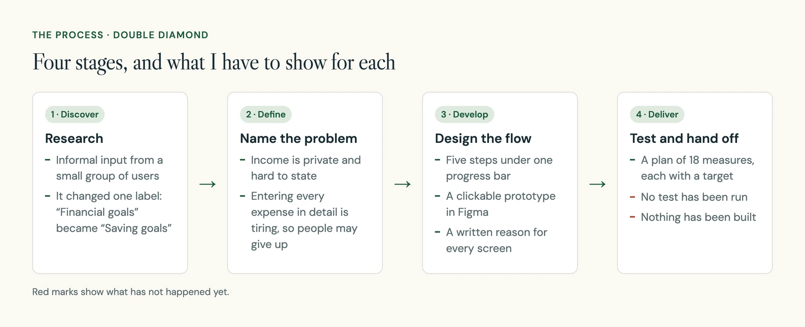
For each screen I leaned on a well-known usability rule. These rules are short summaries of how people tend to behave. Each one gave me a reason to keep a screen small or familiar.
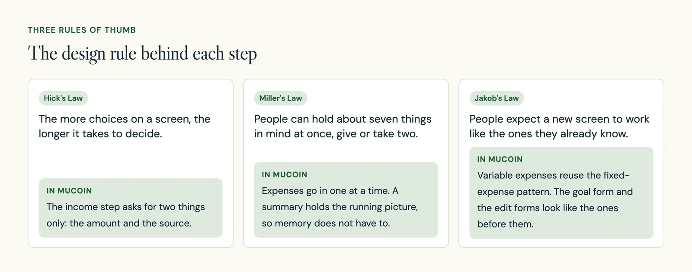
I wrote all of this up as an 11-page rationale. One page covers the name and the process, four pages go through the flow screen by screen, and six pages define how each screen would be measured.
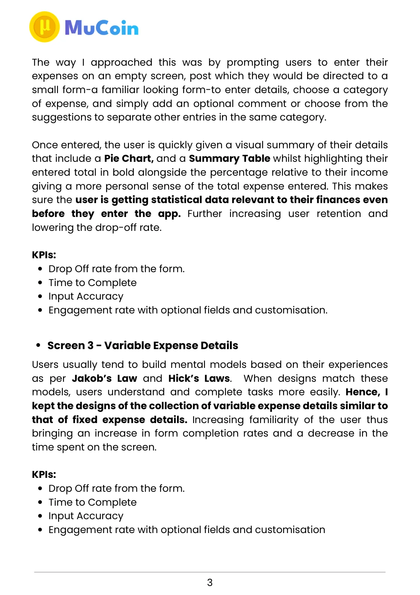
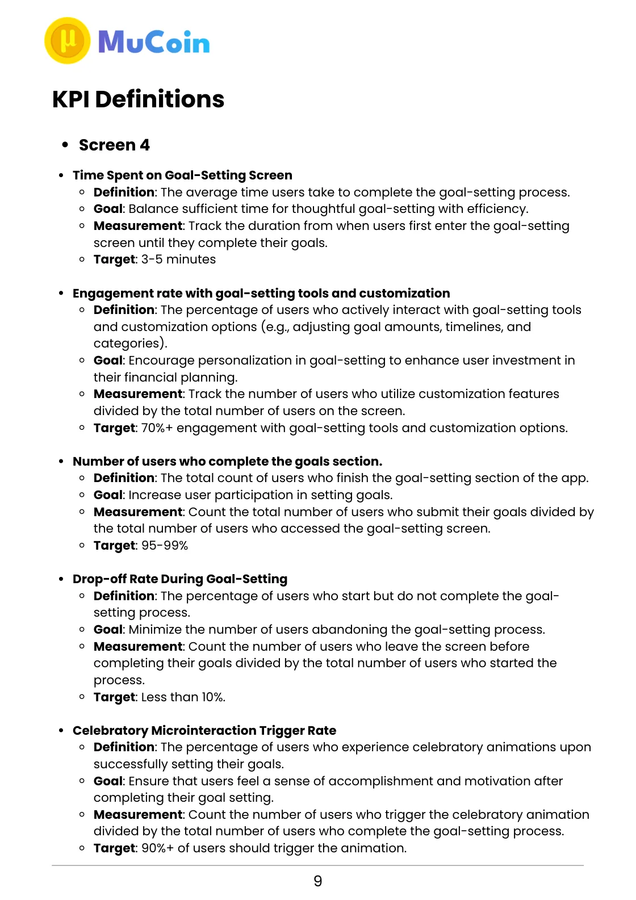
03 The design
Income gets two fields and nothing more
Income is the first step, and it is a private number. I did not want the screen to scare anyone off. So it asks for two things only: the amount and where it comes from.
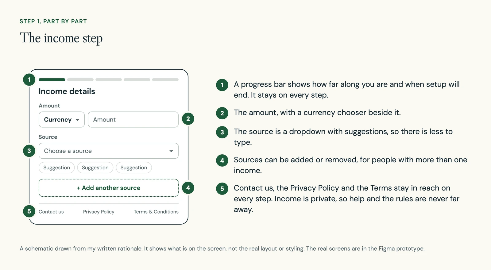
04 The design
Expenses go in one at a time, then add up on screen
Fixed expenses stay the same each month. Variable expenses change. Listing all of them in detail is where I expected people to give up, because nobody holds a whole month of spending in their head.
So the step starts empty, with one prompt. Each expense goes through a short form: the details, a category and an optional comment.
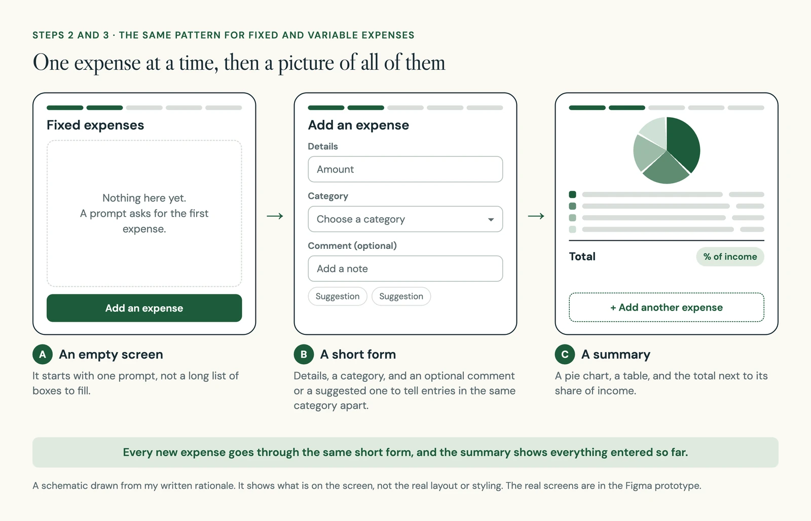
Once an expense is entered, the person sees a summary. This is the part that gives something back: real numbers about their own money, before setup is finished.
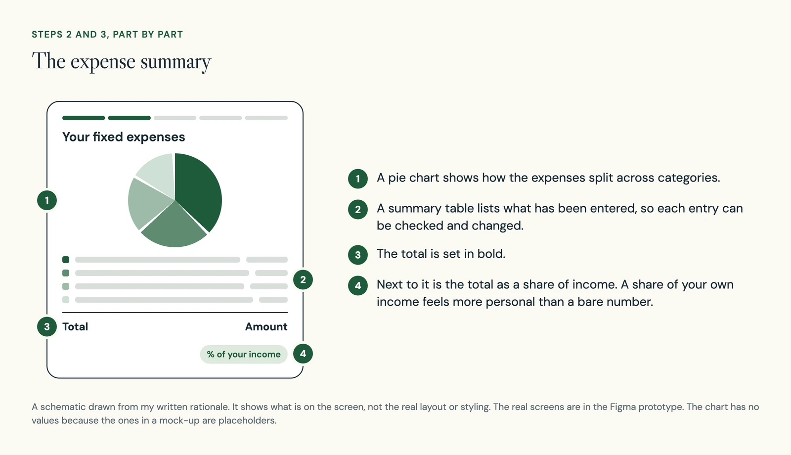
The variable-expense step uses the same three states. By then the pattern is familiar, so I expected it to go faster. That is a guess I have not tested.
05 The design
“Financial goals” became “saving goals”
This step was first called Financial goals. In informal research with a small group of users, Saving goals appealed more, so I renamed it. My write-up does not say how many people that was, so I treat it as a hint and not as a finding.
The step opens with a question: how much are you looking to save? Under it are suggested amounts, shown as shares of the person's income. After that they can set a goal of their own or pick a suggested one.
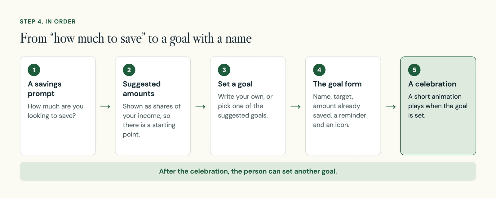
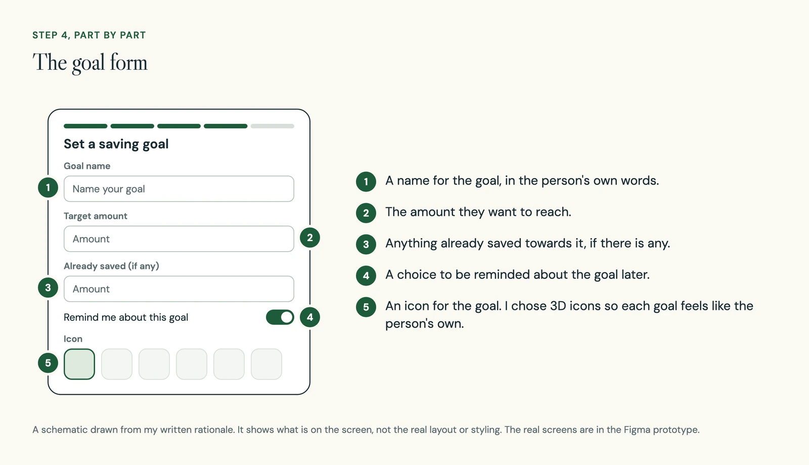
06 The design
The last step is a check, and everything can still be changed
The final step shows everything the person entered, grouped into three sections: Income, Expenses and Goals. Each section opens and closes, and each entry can be edited. Editing goes back to a form the person already knows.
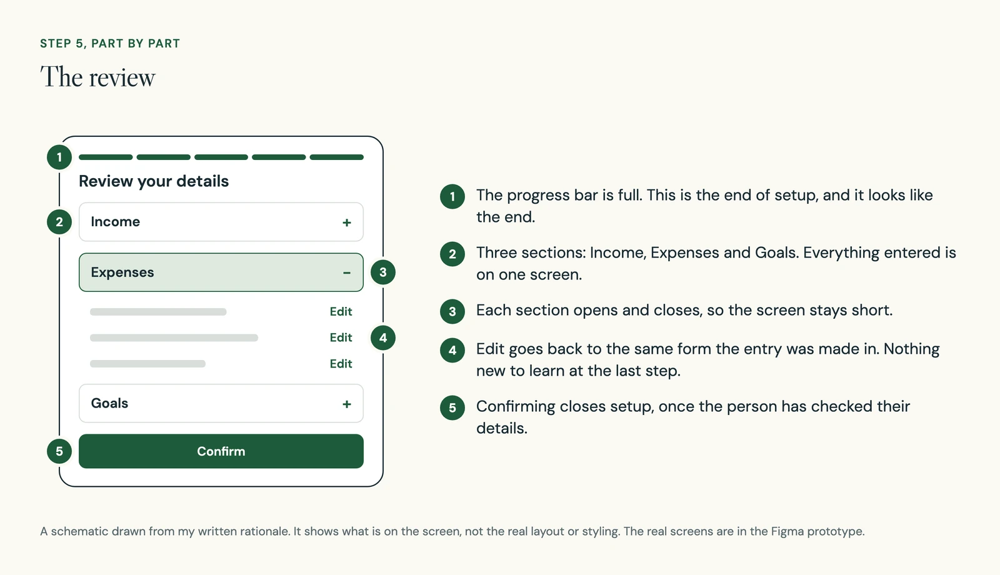
I wanted this step to do two jobs. It lets people catch mistakes while the numbers are fresh. It also gives setup a clear end, so the person feels finished and in control of what they shared.
07 Measures
Eighteen measures, each with a target
A KPI, or key performance indicator, is a number you track to see whether something is working. I defined 18 of them across the five steps. The two expense steps share the same four. For each one I wrote what it counts, how to count it and the number I would aim for.
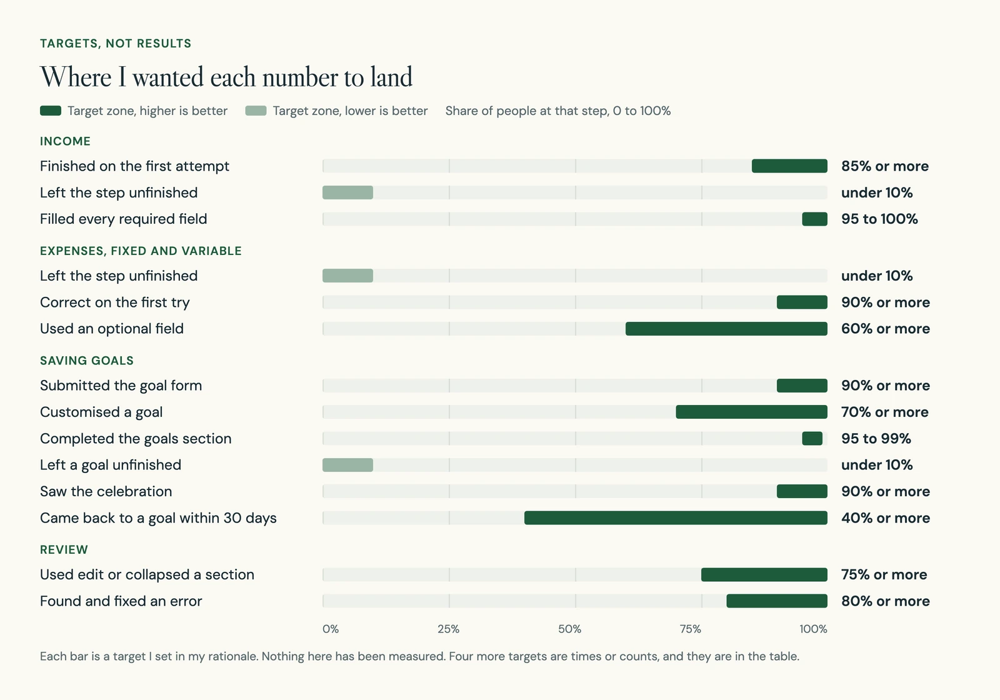
Here is the full list, including the four that are times or counts.
| Step | Measure | What it counts | Target |
|---|---|---|---|
| Income | First-attempt completion | People who finish the step without going back to fix or fill in something | 85% or more |
| Income | Drop-off | People who leave the step unfinished | Under 10% |
| Income | Task completion | People who fill in every required field | 95 to 100% |
| Expenses | Drop-off | People who leave before finishing the required fields | Under 10% |
| Expenses | Time to complete | Average time from opening the step to finishing it | 1 to 2 minutes |
| Expenses | Input accuracy | People whose entries are correct and complete on the first try | 90% or more |
| Expenses | Optional fields used | People who use an optional field or add a category of their own | 60% or more |
| Saving goals | Form completion | People who start the goal form and submit it | 90% or more |
| Saving goals | Time on goal setting | Average time from opening the step to finishing the goals | 3 to 5 minutes |
| Saving goals | Goal tools used | People who adjust or customise a goal | 70% or more |
| Saving goals | Goals section completed | People who reach the step and submit a goal | 95 to 99% |
| Saving goals | Drop-off | People who start a goal and do not finish it | Under 10% |
| Saving goals | Celebration shown | People who finish a goal and see the animation | 90% or more |
| Saving goals | Goals revisited | People who come back to review or change a goal within 30 days | 40% or more |
| Review | Time on review | Average time on the review screen before submitting | 1 to 3 minutes |
| Review | Edits after review | Changes made after reaching the review screen | 1 or fewer per person, on average |
| Review | Edit and collapse used | People who use click-to-edit or open and close a section | 75% or more |
| Review | Errors found | People who spot at least one error and fix it | 80% or more |
08 Looking back
Three targets I would rewrite
Reading the targets again, some of them do not hold up. I would fix these before running any test.
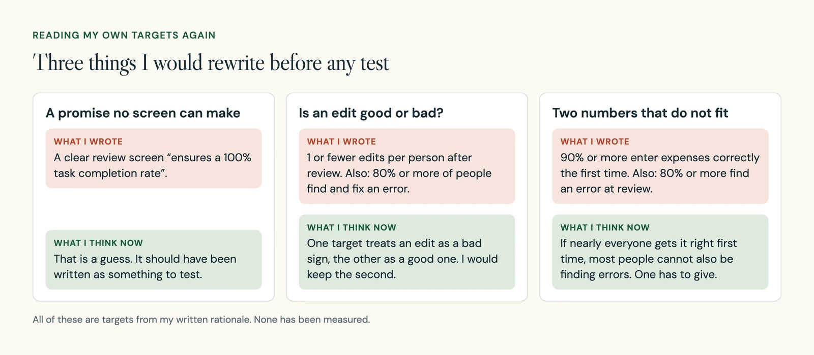
A smaller one sits beside these. I set a target for how often the celebration plays after a goal is set. It plays every time, so that number would only tell me whether the animation works. It says nothing about how people feel.
The measure I care about most now is corrections. Someone who notices a wrong amount and fixes it has a better budget than someone who finished fast with the wrong numbers.
09 Name and look
The name means small steps
Mu is the Greek letter μ. It is often used to mean micro, and in statistics it stands for the mean, or average. Both fit a budgeting app, where small amounts and averages matter. Despite the word coin, MuCoin has nothing to do with cryptocurrency.
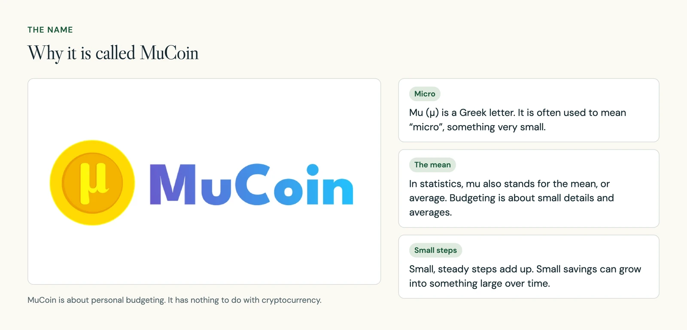
For colour I wanted a mix of formal and casual. Money is a heavy subject, and the look was meant to make it feel a little lighter.
10 What comes next
What I would do before building it
The flow is designed and the measures are written. The next job is to find out whether any of it is true.
- Test it with real people.Watch each step: who finishes, how long it takes to reach a useful summary, and which errors get caught at review.
- Compare it with a shorter path.Try a short version with optional detail against this five-step sequence, and see which one people complete.
- Include the awkward cases.Irregular income, rough estimates and skipped answers, as well as tidy inputs.
- Ask about privacy.Check that people understand what happens to the numbers they enter.
11 What I learned
A target is a guess until it is tested
The flow rests on one idea I still believe in: give people something back while they are still entering their numbers. A summary after each step is a reason to keep going and a chance to fix a mistake.
What I would change is how I wrote about it. I stated some targets as if they were outcomes. Next time I would write each one as a question, run a small test, and only then put numbers on the page.
An SEO panel you can actually scan.